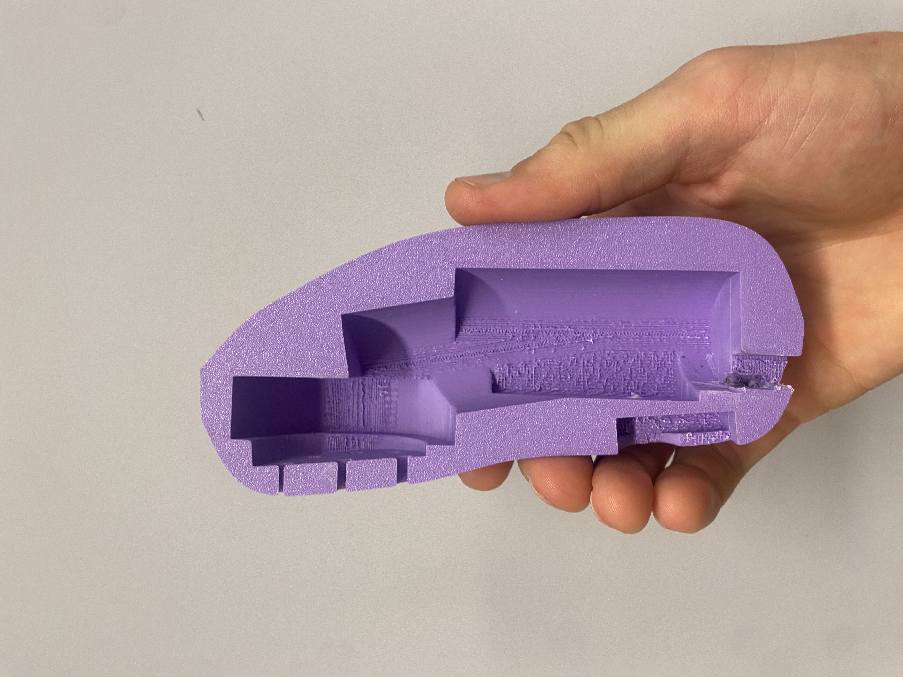
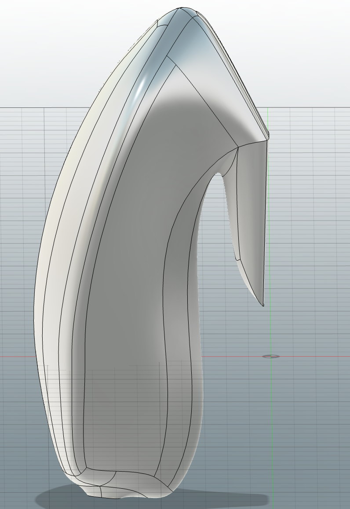

Fable
In Module "Humane by Design" we made a voice assistant tool that could help kids play safely in large public areas. The goal was to create a tool that could help children navigate and play in large public spaces, such as parks or playgrounds, while ensuring their safety. The voice assistant would provide guidance, information, and support to children as they explore and interact with their surroundings. The product we made is called Fable, as it is a kind name, but also insists that the product is a tool to help children create their own stories and adventures in the world around them.
In this page you can get some insight into what is the product, how it was designed and what values we wanted to promote with it.

The remote: Perfectly designed to fit all the components and be robust enough to handle childrens play


Scroll through the document above for more details about the product and our values.
Back to Home Back to Projects